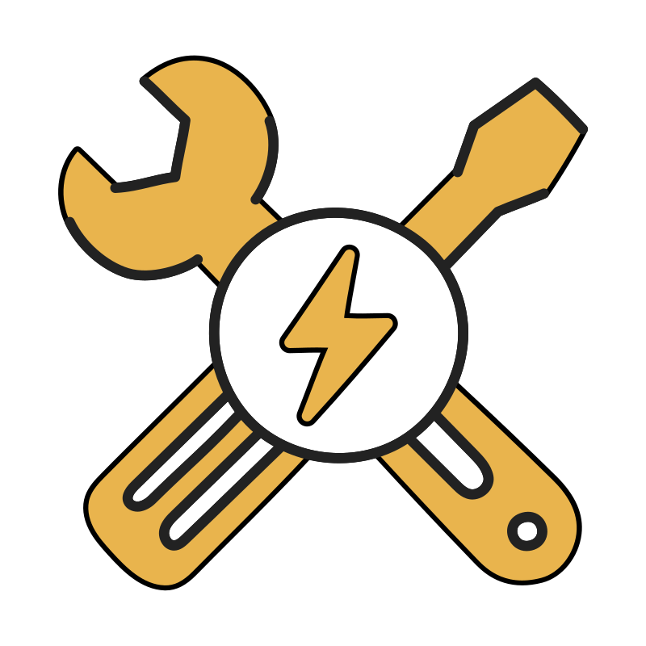
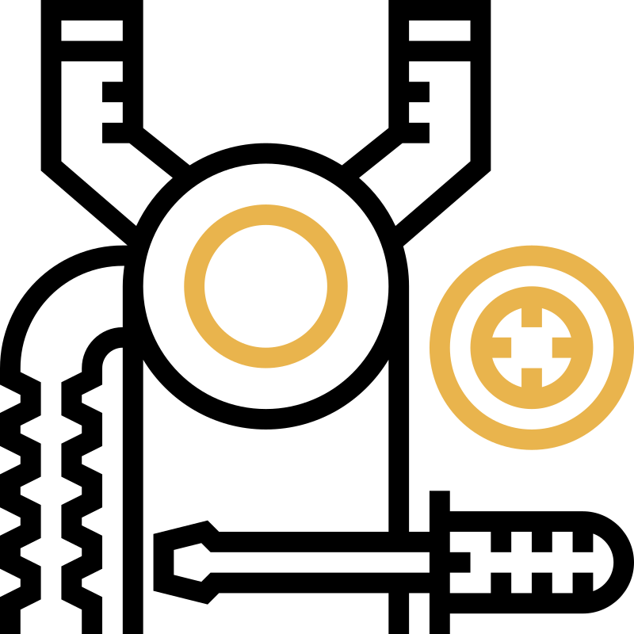
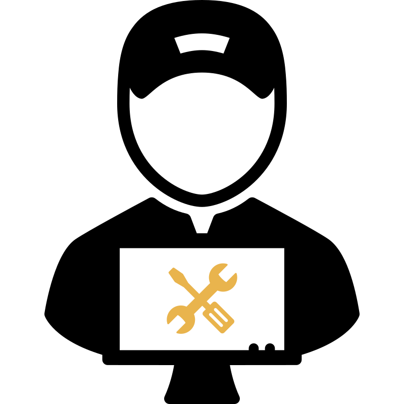

Ремонт
пральних машин
Оперативні послуги з ремонту та обслуговування пральних машин:
-
ремонт різних типів та популярних брендів
-
машинки з вертикальним завантаженням
-
окремі та комбіновані прально-сушильні блоки
-
місто Сміла
Наші послуги
-

Професійний ремонт різних брендів
-

Діагностика роботи
-

Заміна любих деталей
-
Якісне обслуговування
-

Встановлення техніки
Чому обирають нас
- ⚡️Великий досвід роботи
- ⚡️Висока якість робіт
- ⚡️Гарантія від 3-12 міс.
- ⚡️Швидкий виклик майстра
- ⚡️Тільки нові запчастини
- ⚡️Працюємо без вихідних
Про нас
Ми професійно займаємося ремонтом пральних машин багато років, пропонуючи якісні послуги з відновлення вашої техніки. Спеціалізуємося виключно на ремонті пральних машин, що робить нас експертами у своїй справі. Наш підхід спрямований на використання лише оригінальних запчастин, що гарантує довговічність та надійність роботи. Кожна виконана нами робота супроводжується гарантією, що підкреслює наше прагнення до якості та турботи про клієнтів. Незалежно від складності поломки, ми завжди знаходимо оптимальне рішення, повертаючи вашу пральну машину до життя швидко та ефективно.